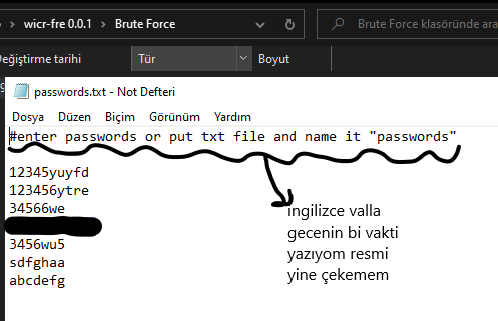
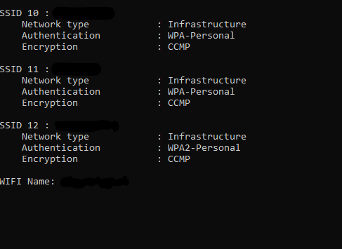
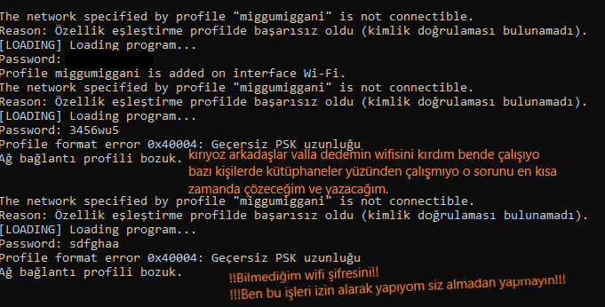
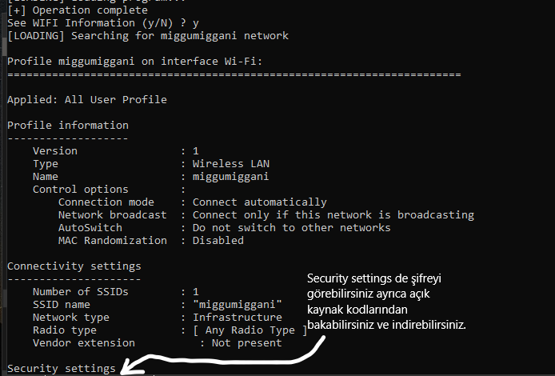

wicr-freamwork Wicr-freamwork açık kaynak kodlu olarak yayınlandı peki ama wicr-freamwork nedir? wicr-freamwork wifi lara kabakuvvet uygulayarak wifi şifresini kırar evet githubda yönergeyi ve programı ingilizce yaptım aslında türkçe kullanmayı düşündüm yapçaktım hatta ama vazgeçtim neyse sizin için türkçe bir yönerge vereyim. Önce bi wordlisti düzenleyelim:
tamam şimdi ben çakallık edip wifinin !!bilmediğim!! şifreyi koydum buraya muq şimdi bu iş tamam geçelim şimdi öbür işe geçelim. Evet mevcut wifileri listeledi kırmak istediğimiz wifinin adını giriyoruz ve anında kırmaya başlıyor bi fotoraf daha koyayım:
Evet kırmayı deniyoruz ve şifreyi bilerek koyduğum için wifiyi kıracak fotorafa bikaç not bıraktım önemli notlar da var okuyun lütfen:
Evet arkadaşlar kesimlikle bilierek wordliste koymadığım wifi şifresini kırdık ayarlarda security settings de şifreyi görebileceiz:
Evet şifreyi bulduk arkadaşlar bu aracı yazdım ve birsürüsünü yazacağım sıradaki hedefim wicr-pro o da birmek üzere zaten kısa zaman içerisinde mtool isimli mail kırıcıyı yapacağim ve çok iyi hedeflerim var
2018-03-18